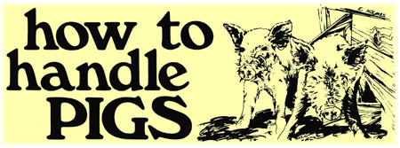

Hogs are about the hardest of all homestead animals to fence in . . . and small pigs are especially difficult to hold: They can go over, under or through just about anything short of a solid board wall once they take it into their heads to get out.
That fact became very real to us last spring, when we bought a couple of 40-pound feeder pigs. We started out by making the animals a board pen (three and a half feet high . . . (to begin with, anyhow) inside the barn. Then we added an outdoor enclosure of sheep netting which we salvaged from an old fence row on our place.
That was our first big mistake. Sheep netting is no substitute for hog wire: The mesh is much too large for pigs. Seems like the little rascals just squirt through anything they can get their heads into up to the neck. We couldn't afford to go to town and buy a whole new roll of the proper fencing . . . so we compromised, got some two-inch mesh chicken wire and ran it around the sheep netting for greater strength and rigidity.
This precaution only sent the pigs under the wire instead of through it. We were pretty discouraged until a neighbor told us to lay logs around the inside of the pen at the base of the fence so the critters couldn't get their snouts under the wire and shove on through. That solved the burrowing problem.
The next time the little porkers got out, they went over the boards of the pen inside the barn. In other words, a pair of one-foot-tall animals climbed a sheer wooden wall three and a half times their own height Amazing!
Once loose, the feeder hogs rampaged around in the barn, upsetting feed sacks, plowing through the worm beds beneath our rabbit hutches and even rooting up chunks of the floor where the frost had heaved the cement After that, I ran the sides of their enclosure on up to four and a half feet . . . a height that proved too much for them.
Another neighbor of mine restrains his four pigs with an electric fence made of two hot wires, one eight inches off the ground and the other a foot higher. The charger and a half mile of the smooth strand he uses cost $29.00 and, he says, "work real well". One especially desirable feature of such an arrangement is that it's easily moved . . . so you can shift the hogs to fresh pasture periodically to eliminate wallows and help cut the feed bill.
Once pigs do get out, catching them can be a frustrating yet rewarding experience . . . but less so with old hogs than with young. Swine-like humans-become slaves to habit as they age and prefer regular meals in familiar surroundings, so their capture is just a matter of tempting the animals back into their pens with the feed pan.
Young pigs, though, are a whole different ball game. They're quick, slick and smart . . . and recovering them is usually a major undertaking. This is especially true in a sparsely populated area like ours, where a hog can simply disappear into the woods with little likelihood of being spotted by a neighbor.
Our own problem was all the worse because we bought our feeders from a farmer who had about ninety other hogs . . . so the young-which had had little if any individual attention from their keeper-weren't very tame. Then our pair were made even wilder by a friend's dog, which would get into their pen and bark furiously at the porkers. The dog didn't harm the pigs: Apparently he was fascinated by those strange creatures and wanted them to play with him. The poor beasts, of course, didn't understand and were left trembling with terror. Their skittishness, coupled with our lack of experience in fencing, led to a three-week period of liberty for the slippery youngsters.
The first rule in catching small pigs is not to chase them. Running after the animals only makes them wilder. We didn't know that, however, and when our two got into the three-acre woods next to our barn we spent the first week pursuing them back and forth through the brush . . . with no success at all. Young hogs are quick, and so low to the ground that there's practically nothing on them to grab for as they run between your legs (which they will do). Another of their defenses is to squeal shrilly and unrelentingly-as if being slaughtered with the corkscrew of a dull Swiss Army knife-when capture is near. The sound is so unnerving that it made me let go of the little fiends several times just as they were within my grasp.
After a week of this, our pigs were like deer. We could walk within a foot of them in tall grass and they would stand stock still and silent, completely invisible.
I next spent a week or ten days trying to snare the fugitives out in the woods. First I dug a pit trap four feet deep, covered with twigs and burlap and baited with a pan of feed. The hogs fell in half a dozen times, and climbed out just as often. Then I tried a box trap. . . an even more dismal failure. It turned out to be too short and-when triggered-dropped on the backs of the quarry. With its sides held up that way, it let the pigs right out again.
I finally decided just to feed and water the critters out in the brush, and to move their rations a little closer to home every day. This process took another week, until finally one day I set the pan down inside the barn. I was standing on the back porch watching the rain fall when I saw my hogs disappear into their former quarters through the only open entrance. Jubilantly I sneaked down and slammed the door before they knew what had happened. Once more they were domestic pigs.
I hope my experience helps some of MOTHER's readers. Happy hoggin'.
|
 |
|
|